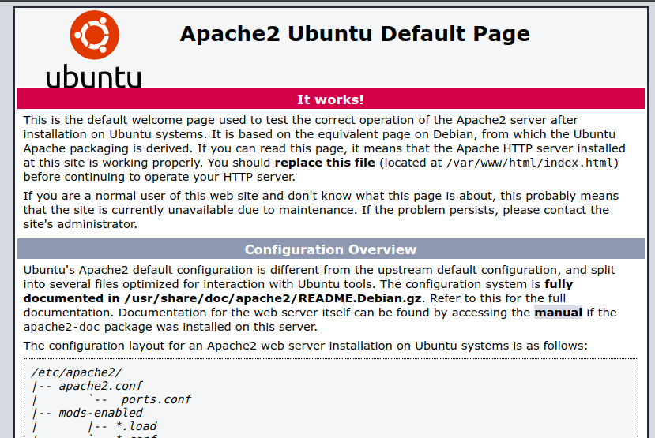
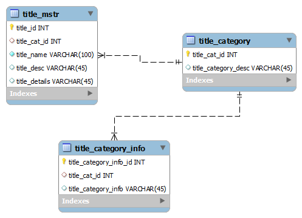

What is a LAMP stack used for?
Project Overview
LAMP is the acronym for: Linux; the operating system,
Apache; the web server, MySQL; the
database server, PHP; and the programming language.
All of them are open source technologies in which it means there are a
community for platform maintainance and available for anyone to use for free.
To do this it was needed to install the LAMP package over
LINUX Ubuntu 16.04 LTS
environment and enable Apache, MySQL and PHP tools in order to index data base estructure.
Besides, it is important to mention that
Apache was used as web server HTTP,
a popular open-source service for web servers deplyment.

After the setting up of the database a proper structure for license management was arranged for
MINI Robot® in which the final users are able to account all the functions they have
paid in a safe mode and in an efficient way.

In summary, the main objective was achieved for global integration of use of platforms for
databases development using MySQL and APACHE, two powerful open source and free tools.
On the other hand, we put into practice all the knowledge acquired from the use of PHPMyAdmin
for the declaration of database structures.
Learn More